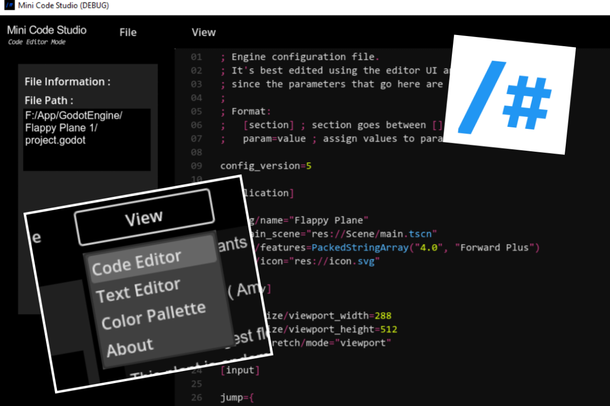
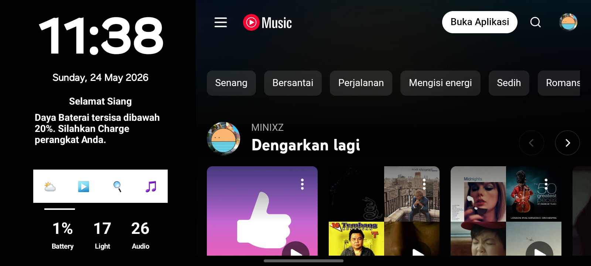

M. Adelio Altisa M.
Siswa SMA • Developer • OS Enthusiast
Tentang Saya
Singkat saja, nama lengkap saya tertera diatas tuu dan saya biasa dipanggil Adelio di lingkungan saya, yap itu panggilan formal universal (klo panggilan khusus sebaiknya jgn dicari tau, aneh2 semua jir??)
Saat ini saya sedang menempuh pendidikan di salah satu SMA yang ada di Kota Kudus, yakni SMA Negeri 1 Kudus sebagai siswa kelas 10.
Untuk bakat dan minat lebih mengarah kepada bidang IT (Information Technology) and yeah, halaman yg anda lihat saat ini adalah hasil kegabutan saya saat libur ramadhan. btw info ps let
Kreasi Saya
MiniCode Studio

Saya memiliki hobi coding dan membuat program sendiri, untuk aplikasi yang saya buat dibawah sini umumnya dibuat menggunakan Godot Engine 4.
MiniCode Studio

Saya memiliki hobi coding dan membuat program sendiri, untuk aplikasi yang saya buat dibawah sini umumnya dibuat menggunakan Godot Engine 4.
Aplikasi yang dapat memungkinkan penggunanya untuk melakukan pengetikan atau coding semacam VSCode Studio tapi dengan size yang lebih ringan dan memiliki 2 mode utama, yakni Code Editor untuk aktivitas pengetikan kode kompleks seperti coding dan programming serta Text Editor untuk mengetik biasa seperti membuat catatan.
Aplikasi ini mendukung semua format file yang berbentuk teks (yap, literally semua jenis file yg mengandung teks!) seperti .txt .py dll.
Download
Minhy OS

Selain itu, saya juga membuat sistem operasi sendiri yang memiliki konsep Hybrid yakni dalam sistem ioperasi ket .deb
Minhy OS

Selain itu, saya juga membuat sistem operasi sendiri yang memiliki konsep Hybrid yakni dalam sistem ioperasi ket .deb
Sistem operasi berbasis Debian Linux yang saya kembangkan dengan fokus pada performa ringan, dukungan hybrid, dan kemudahan kustomisasi.
Hybrid Operating System
OS ini memiliki dukungan untuk menjalankan aplikasi dari dua platform yang berbeda secara langsung! U bisa jalanin app Windows berformat .exe .msi serta aplikasi Linux berformat .deb dan lainnya.
oiya, ada beebrapa settingan tambahan seperti Hybrid Power Plan, Controlled Hybrid CPU Management dan beberapa settingan lain yang tersedia di pengaturan untuk efektifitas penggunaan.
Download
YouTube Channel

Membuat konten seputar teknologi, eksperimen sistem, development, dan eksplorasi dunia IT.
YouTube Channel
Membuat konten seputar teknologi, eksperimen sistem, development, dan eksplorasi dunia IT.
Berisi eksperimen OS, tutorial development, serta dokumentasi proyek yang sedang saya kerjakan.
Kunjungi ChannelKontak
Email: emailkamu@email.com
GitHub: github.com/username
YouTube: youtube.com/namachannel